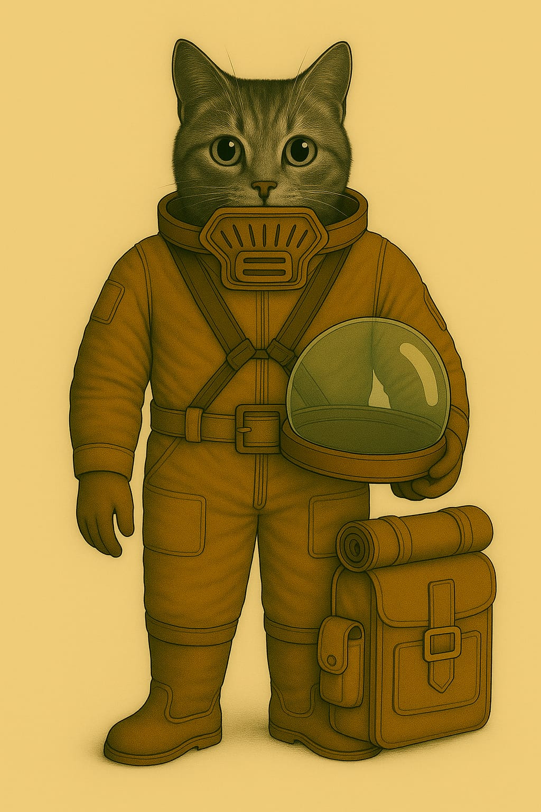
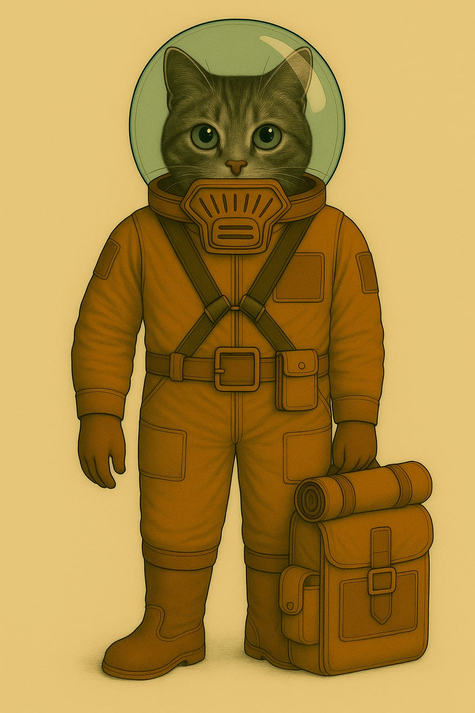
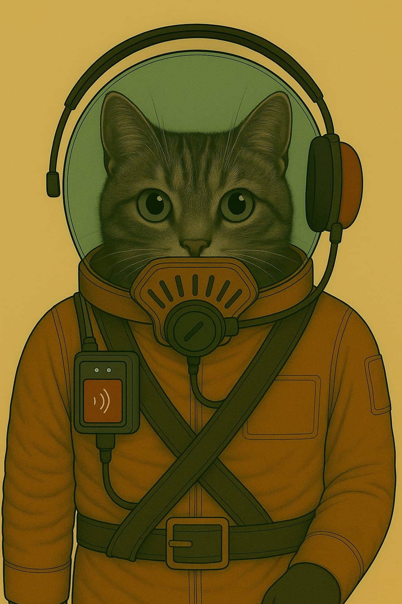

Kadettenanzug "Typ K-1R"
Verwendung: Ausseneinsätze · Geländeübungen · Ausbildungsexpeditionen auf der Marsoberfläche



🧰 Allgemeines
Der Kadettenanzug "Typ K-1R" ist ein leichter Ausseneinsatzanzug für Nachwuchspersonal und Schulungseinsätze ausserhalb der Stationen. Er schützt zuverlässig vor Staub, UV-Strahlung, Kälte und dünner Atmosphäre – bei hoher Bewegungsfreiheit und robuster Konstruktion. Der Anzug ist für angeleitete Expeditionen unter Normaldruckbedingungen konzipiert und entspricht den kolonialen Sicherheitsstandards für Kadettenausbildung.
👕 Anzug (Ganzkörper-System)
- Aufbau: Einteiliger, versiegelter Ausseneinsatzanzug mit zentralem Reissverschluss, Isolierkern und Kreuzgurtsystem
- Material: Dreilagige Mars-Polyfaser mit Staubschutzoberfläche und temperaturregulierender Innenstruktur
- Tragesystem:
- Brustgurtführung zur Helmbefestigung
- Breiter Gürtel mit Nottrennverschluss
- Befestigungszonen:
- Keine Taschen
- Stattdessen Superhaft-Klettzonen an Oberschenkeln, Unterarmen und Gürtelbereich
- Zur Aufnahme von externen Ausrüstungsmodulen, wie Werkzeughalterungen, Lichtquellen oder Kartenträgern
🥾 Stiefel
- Typ: Halbhohe Aussendienststiefel
- Versiegelt, isoliert und antistatisch
- Flexgelenke zur Unterstützung langer Märsche
- Staubresistent und trittsicher auf losem Gelände
Atemschutz – Standardfiltersystem
- System:
- Kein Leichtatmer-Modul
- Standardisierter Frontanschluss für Filtrationskassetten
- Kompatibel mit Kolonie-Kassetten Typ S (Feinstaub, Gas, Partikel)
- Sichtbare Filteraufnahme mit modularer Einschuböffnung
- Wartung:
- Kassette werkzeuglos wechselbar
- Einsatzdauer je nach Belastung 4–8 Stunden
Helm (abnehmbar)
- Typ: Kuppelhelm mit mechanischer Verriegelung
- Schutz gegen Partikel, Lichtreflexion und Unterdruck
- Aufsetzbar über Bajonettverschluss
- Kein Funk integriert – nur passive Helmform
🎒 Zusätzliche Ausrüstung
- Rückensystem:
- Leichter Ausrüstungsbehälter mit Rollmatte
- Modulaufnahme für Trinksystem, Nordweiser, Ersatzkassette
- Gurtmontage mit Fixierungspunkten
📡 Einsatzprofil
- Zielgruppe: Kadetten in technischer oder operativer Ausbildung
- Verwendung:
- Geführte Expeditionen auf der Marsoberfläche
- Ausbildung im realen Aussenumfeld (z. B. Sensorwartung, Topografie, Navigation)
- Wartungsbegleitung, Orientierungsübungen
- Einschränkungen:
- Nicht vakuumdicht
- Kein integrierter Funk
- Nur mit zugelassener Filterkassette verwendbar
- Einsatz nur unter Aufsicht und mit Rückkehrfenster